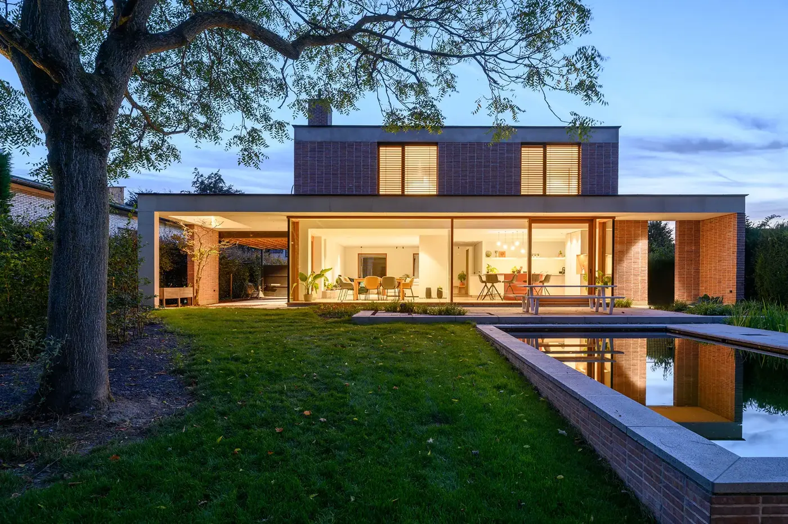
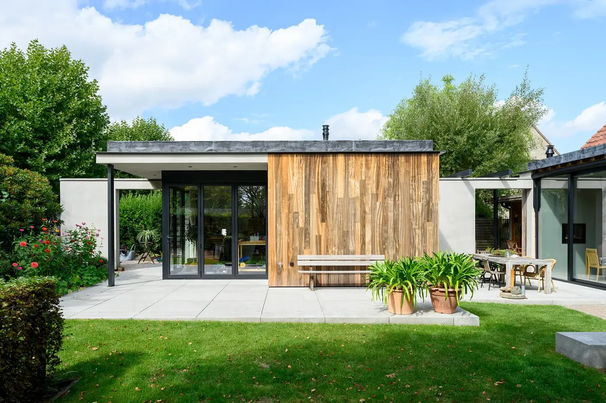
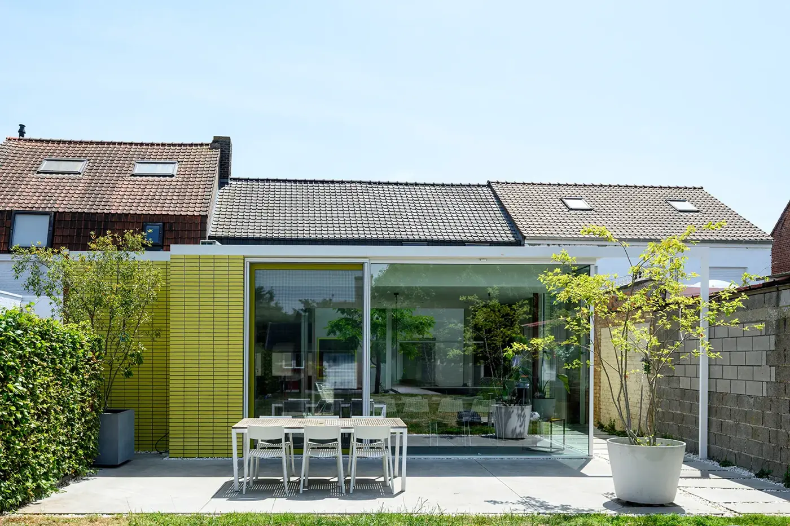
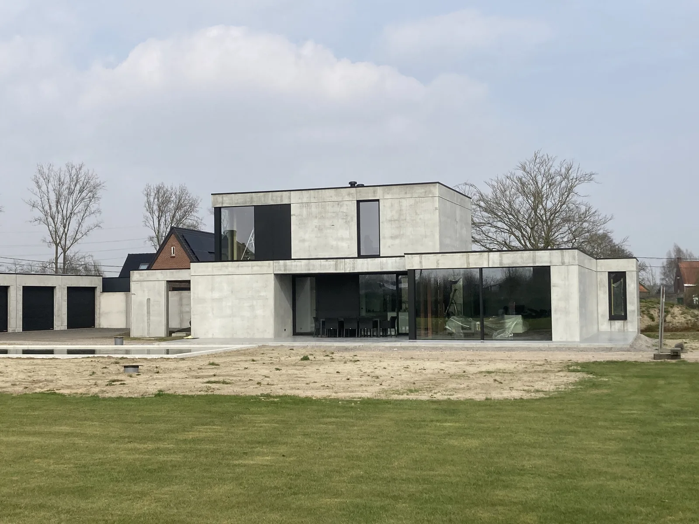
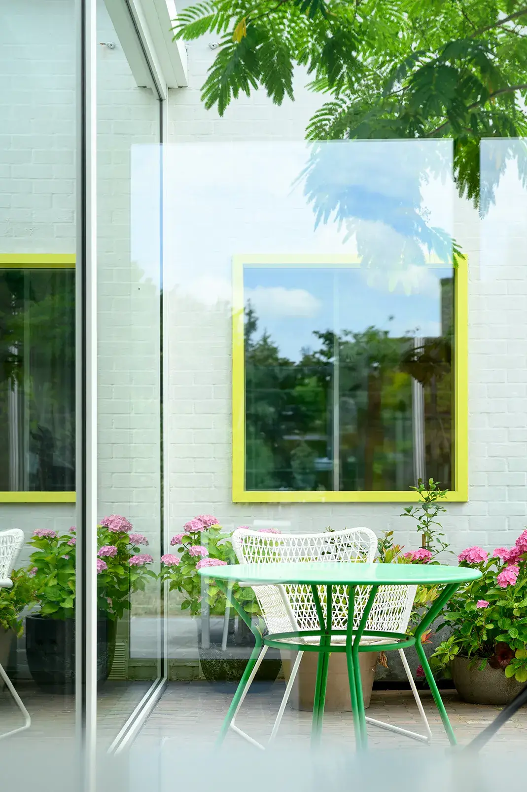
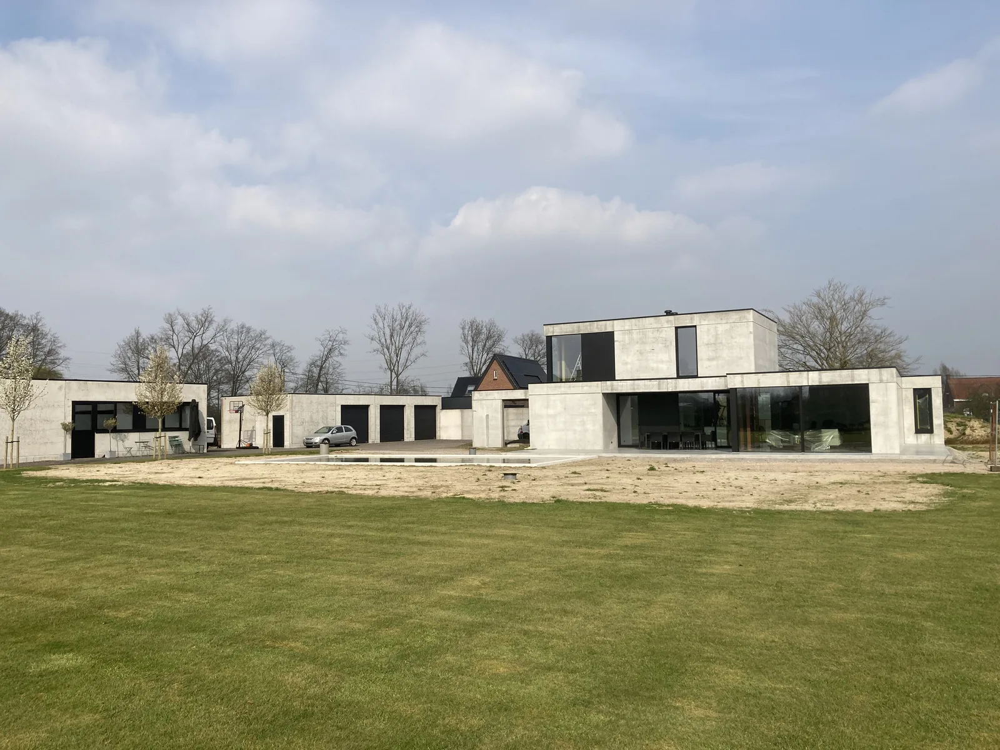
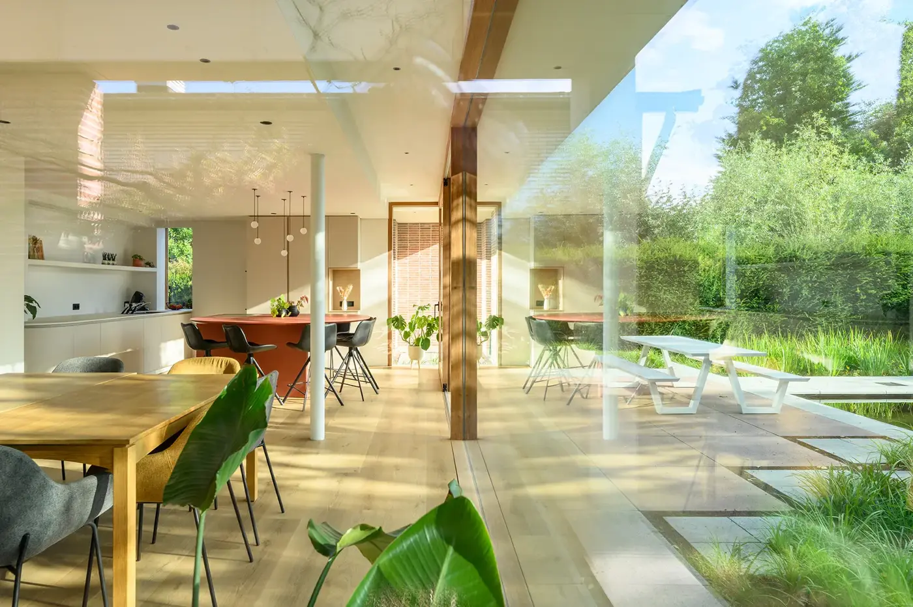
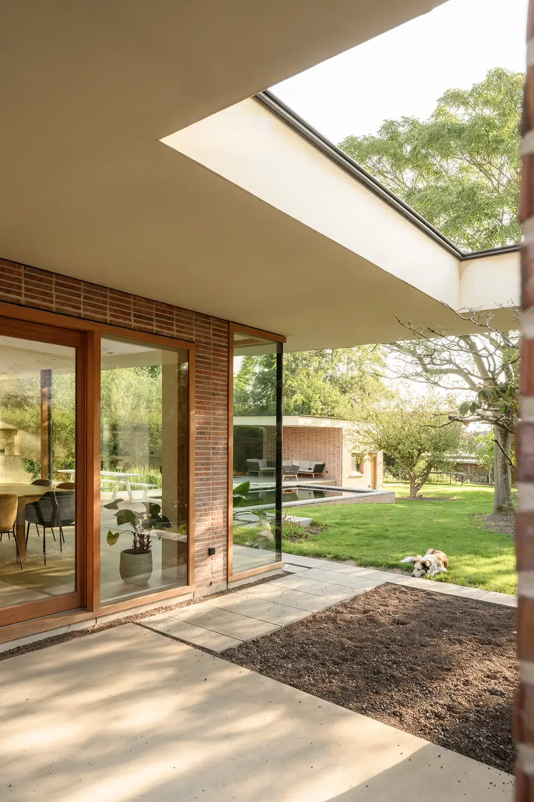
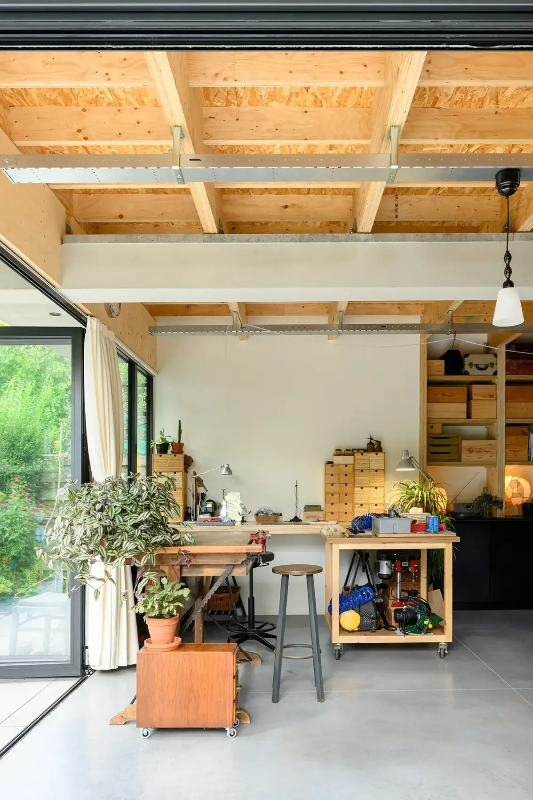

Architectuur die klopt met de plek en met wie er woont.
VAK-architectuur is het bureau van Valerie Devos en Korneel Vandromme. We tekenen woningen, verbouwingen, scholen en publieke gebouwen, en volgen ze zelf op tot de oplevering.
op Google
één aanspreekpunt





Elk project draagt de naam van wie er woont of werkt.
Een code met de initialen van de bouwheer en het dossiernummer. Zo blijft elk ontwerp van iemand. Klik op een project voor alle beelden.
1+1=1
Twee kinepraktijken onder één dak.
Kine Roeselare werkte vanuit twee vestigingen en wilde samen verder. Op het perceel moest ook plaats komen voor heel wat parkeerplaatsen, dus hielden we het gelijkvloers klein en tilden we het hart van de praktijk naar boven.
Holle betonwanden geven het gebouw zijn industriële basis. Het gelakte strekmetaal filtert het licht en maakt het gebouw van ver herkenbaar.
Vijf woorden die in elk ontwerp terugkomen.
Onze kernwoorden. Ze zeggen meer over hoe we tekenen dan een lange visietekst.
#connectie
Ontwerp en uitvoering liggen bij ons aan dezelfde tafel. Zoals materialen in een gevel op elkaar aansluiten, zo sluit wat Valerie tekent aan op wat Korneel op de werf opvolgt.
#context
Een bomenrij, de oriëntatie van het perceel, de buren. We kijken eerst rond voor we iets op papier zetten, zodat het gebouw er straks thuishoort.

#daglicht
Licht binnenlaten is één ding. Meteen nadenken over luifels, claustra's en zonwering, zodat het in de zomer aangenaam blijft, is het andere.

#kleurtoets
Een geel raamkader, groen strekmetaal. We schuwen kleur niet, maar zetten ze daar waar ze iets doet.
#materiaal
Hout, kalkmortel, beton. Ruw en zacht, recht en rond. Het evenwicht zit vaak in wat je weglaat.


Twee architecten, één tafel.
Geen tussenpersonen en geen dossier dat van bureau naar bureau gaat. Bij VAK-architectuur zit u van bij het eerste gesprek samen met de twee mensen die uw project ook echt maken.
We werken voor gezinnen die verbouwen of nieuw bouwen, maar evengoed voor scholen, zorgpraktijken en besturen. Groot of klein, de vragen blijven dezelfde: wat wilt u, wat laat het perceel toe en wat kan het budget dragen.
Zoekt hoe het licht binnenvalt en waar een kleur het verschil maakt.
0474 40 17 87Bewaakt wat haalbaar is en staat op de werf als het erop aankomt.
0468 17 34 96Van eerste schets tot sleutel.
Elk traject is anders, maar deze vier stappen komen altijd terug. U weet bij elke stap wat er komt en wat het van u vraagt.
Kennismaking
Vrijblijvend, op het bureau of bij u ter plaatse. We luisteren naar wat u voor ogen hebt en kijken samen naar het perceel of de woning.
Schets en ontwerp
Eerst ruwe schetsen, dan een ontwerp dat we samen bijsturen. Licht, materiaal en budget wegen we van bij het begin mee af.
Vergunning en dossier
We maken de omgevingsaanvraag op en werken het uitvoeringsdossier uit, met de details en lastenboeken die aannemers nodig hebben.
Werf en oplevering
Korneel volgt de werf op en houdt de planning en de afspraken met de aannemers in het oog, tot alles is opgeleverd.
Een project in gedachten?
Vraag eerst onze brochure. Daarin staat helder hoe we werken en welke pakketten er zijn voor een verbouwing of een nieuwbouw.
Route plannen
Korneel 0468 17 34 96